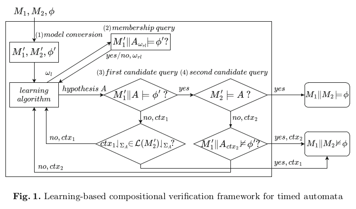
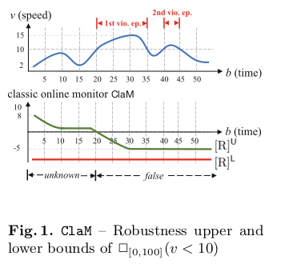
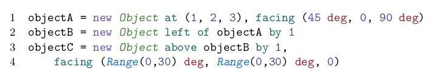
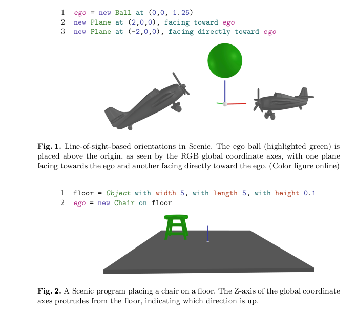
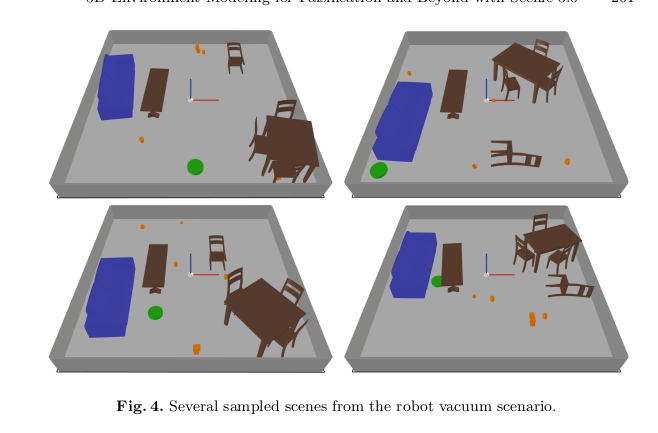

<2024-07-20 শনি>
I loved the following papers.
Automated Analyses of IOT Event Monitoring Systems
Customers use AWS IoT Events service by creating a detector model that detects events occurring on IoT devices and notifies an external service so that a corrective action can be taken. An example is an industrial boiler which constantly reports its temperature to a detector. The detector tracks the boiler’s average temperature over the past 90 min and notifies a human operator when it is running too hot.
Users define these rules using simple user interface, using a combination of buttons and eventName textboxes.
So users often make mistakes. And such mistakes can cost life. So it is necessary to robustly verify user rules. So Amazon defined a total of 5 safety property to be checked for this simple DFA rules, based on a survey of which errors occur the most in user-defined rules. The safety properties are: 1.The Model does not Contain Type Errors
Now they simply do exhaustive model checking of these 5 safety properties against user-defined rules. And done! Their evaluation showed that this simple scheme detected bugs in 93% of user automation rules.
Membership and Candidate Queries posed by a Learner.
In this conference, I found many papers on learning automata. As we know, it is tedious for users to manually define system rules. It is specially true for large systems. So researchers designs algorithms to automatically learn the rules. For that, the learning algorithm first makes an assumption, ask the user if its true and if it is not, then based on membership queries and earlier results, it makes another hypothesis. This continues until it finishes (:3 idk). Overall, this is a deterministic learning approach. Difference between this approach and machine learning is that, in machine learning, the algorithm goes towards the slope while here, the algorithm goes wherever the user takes it. 1.Learning Assumptions for Compositional Verification of Timed Automata. This paper shows how we can easily scale model checking. As we know, state explosion can occur for large systems. However, techniques like symbolic execution and abstraction has largely tacked this problem. Still, the complexity becomes exponential (2n) when a system comprises of multiple (n) subsystems. To address this issue, we tackle it in a different way. We prove the subsystems separately. We assume that if component A satisfies some property and system S, other component also satisfies it, the n the total system also satisfies the property. I explained this rule/assumption of compositional verification in a simple manner. However, in practice, each component is dependent and connected. So the user need to manually specify the complex assumptions of large compositional systems. To address this, learning systems were proposed. In a learning system, the makes a hypothesis, asks the user to agree or disagree to it, then uses membership query to make the next hypothesis, until it eventually finishes. This paper addresses the learning assumption learning of compositional Time Automata. 
Online Causation Monitoring of Signal Temporal Logic
Signal Temporal Logic (STL) is used to formally express signals along the dimension of Time. A signal is a N dimensional vector that has a certain physical meaning, e.g., speed, RPM, acceleration. Let us consider an example.

The figure above shows the monitoring of the speed of a vehicle (in the upper plot); the specification requires the speed to be always below 10. The lower plot reports how the Monitor's upper bound and the lower bound of the reachable robustness change over time. We observe that the initial value of [R] is around 8 and gradually decreases. The monitor allows to detect that the specification is violated at time b = 20 when the speed becomes higher.
The novelty of this paper is - Existing approaches detect specification violation (satisfy) after a time interval. But this is not enough. The intervals show a monotonic trend so a constant interval time is not sufficient. So instead of detecting violation at each interval, we instead estimate if current signal trend can cause violation soon. Because speed increase is monotonic, it has previous symptoms from which this property violation can be predicted.
TODO Process Equivalence Problems as Energy Games
TODO Commutativity for Concurrent Program Termination Proofs
3D Environment Modeling for Falsification and Beyond with Scenic 3.0
We can model our System using Formal Language like LTL, TLA+ etc. But how do we model Environment? For Cyber-Physical system, the environment is extremely unpredictable and dynamic. So it is hard to model it using language. So instead, we can model the environment, like an environment, using 2D and 3D design tools! Scenic is such a tool. However, note that, Scenic is still a language based modeling language. It does not have GUI based modeling feature yet.
Scenic [10,12] is a probabilistic programming language that addresses this challenge by providing a precise yet readable formalism for modeling the environments of CPS. A Scenic program defines a scenario describing physical objects in a world, placing a probability distribution on their positions and other properties; a single program can generate many different concrete scenes by sampling from this distribution. Scenic also allows defining a stochastic policy describing how agents behave over time, and implementing the resulting dynamic scenarios in a variety of external simulators.
Verification of AI-based autonomous systems requires reasoning about perception and physics in a 3D world. To support such reasoning, a formal environment modeling language must provide faithful representations of 3D geometry.
 Here, we use the at specifier to define a specific position for object A; the facing specifier defines the object’s orientation using explicit yaw, pitch, and roll angles. We then place object B left of A by 1 unit with the left of specifier: this specifier now not only sets the position property, but also sets the parentOrientation property to the orientation of object A (unless explicitly overridden). Thus object B will be oriented the same way as A. Similarly, object C is positioned relative to B and so inherits its orientation as its parentOrientation. However, this time we use the facing specifier to define random yaw and pitch angles, so object C will face up to 30◦ off of B.

Using scenic, we can assign probablistic distribution to each object (e.g. Probablity distribution of a tool being anywhere in the room). So it is possible to generate numerous scenario from the probablistic model. 
TODO A Unified Model for Real-Time Systems: Symbolic Techniques and Implementation
DONE Closed-Loop Analysis of Vision-Based Autonomous Systems: A Case Study
Closed-loop means DNN in Cyber Physical Systems. They use real data distribution to estimate a confusion matrix and use that to send data to the DNN.
The paper is easy. I read the whole paper, i understood each line. But i surprisingly have 0 idea on what it means :>
Safe Environmental Envelopes of Discrete Systems